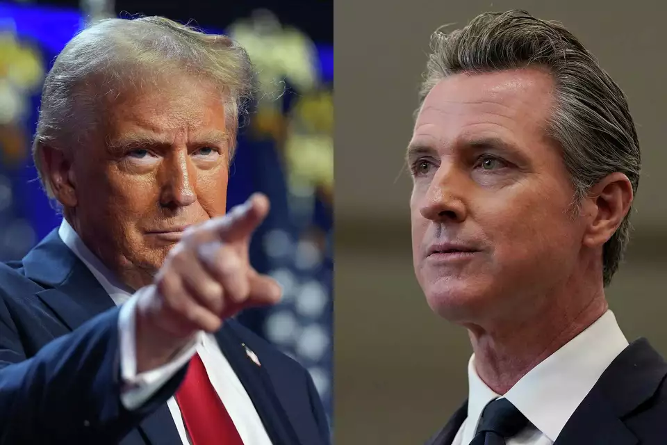
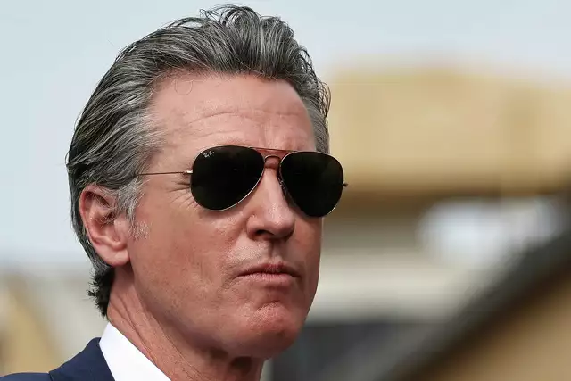

HTML/CSS Assignment #1
Source: https://www.sfchronicle.com/politics/article/gavin-newsom-trump-resistance-19892836.php

Donald Trump's presidential win means California Gov. Gavin Newsom will once again be a leading national figure for the Democratic Party, and possibly a leading candidate for president in 2028. Credit: Evan Vucci/AP
Even as Donald Trump’s victory represents a devastating loss for Democrats, it carries a political silver lining for California Gov. Gavin Newsom, who is now positioned to become the leader of the Democratic resistance.
Newsom has warned about the potential danger of a Trump presidency and has harshly criticized the former president. In recent weeks, he has framed the election in stark terms, especially for California, a bastion of liberal values and home to the nation’s largest population of immigrants.
“No state has more to lose or more to gain in this election in November,” he told reporters on a call last week, warning that Trump’s mass deportation plans would be devastating for California’s economy.
But Trump’s victory represents something of a change in fortune for Newsom, who had gone from a rising star to a backbencher when fellow Californian Kamala Harris was elevated to the top of the Democratic ticket.
Now, Newsom has a political opportunity, said Rob Stutzman, a Republican strategist who worked for former Gov. Arnold Schwarzenegger.
“He gets not only a lifeline to his career that was facing a dead end, but he will be able to position himself as the leader of the resistance,” Stutzman said.
Harris’ loss means Newsom will once again be a leading national figure for the party. It also likely makes him a leading candidate for president in 2028.

Vice President Kamala Harris’ loss to Donald Trump in the race for president means Gavin Newsom will once again be a leading national figure for the Democratic Party. Credit: Mario Tama/Getty Images
Newsom appeared to embrace his newfound position as a prospective resistance leader in a statement Wednesday.
“California will seek to work with the incoming president — but let there be no mistake, we intend to stand with states across our nation to defend our Constitution and uphold the rule of law,” he said.
Newsom has long denied having presidential ambitions. But he has spent significant time over the past few years building a national political support network that could help him run in 2028. He started his own super PAC to support candidates in battleground races, traveled to red states to advocate for abortion rights and debated then-presidential candidate Florida Gov. Ron DeSantis on Fox News. He has built a massive list of donors that he could call upon to launch a presidential run.
“I think Gavin Newsom would be top of the list for Democratic presidential contenders for ’28,” said Katie Merrill, a California-based Democratic strategist. “He’s well positioned to take up that mantle from name ID nationally to a deep fundraising base and a record to run on.”
It's too soon to say how Newsom would fare as a presidential candidate. Stutzman noted that the election results Tuesday are a dramatic rebuke of the Democrats, which could mean Newsom, a governor from liberal California, would have difficulty winning broad support.
Newsom would face serious questions about his electability if he runs in 2028, said Eric Schickler, a political science professor at UC Berkeley.
“I do think there are some real headwinds he’d face in a national race," Schickler said.
In the short term, protecting abortion rights from Trump and Republicans in the federal government will likely be the first thing on Newsom’s radar, Merrill said. Newsom and the state’s other Democratic leaders have worked to ensure abortion is available in the state even after Roe v. Wade was overturned by the Supreme Court, ending the constitutional right to an abortion. But Republicans could try to erode abortion and reproductive health rights nationwide.
“They’re going to have to figure it out in two months,” Merrill said of Newsom and other Democratic governors. “I think for any blue state governor, that is going to be the No. 1 vexing issue.”
She said Trump will also likely try to challenge California’s climate change and environmental protections.
Newsom had served as President Joe Biden’s top surrogate on the campaign trail, but he receded into the background when Biden announced he would no longer seek reelection and endorsed Harris. Newsom continued to campaign for Harris, but his status as a fellow Californian made him logistically and politically an unattractive choice to be her running mate.
As other rising Democratic stars stepped into the spotlight, vying to be Harris’ vice presidential pick, Newsom took a back seat.
Trump’s victory means Newsom will have an antagonist in the White House as he closes out his final two years as governor. Trump has threatened to withhold federal disaster assistance from California because of the state’s liberal policies. If he makes good on that threat, it could be a major problem for the state in the event of a devastating wildfire season or major earthquake.
That puts Newsom in a tough spot of having to “either try to praise Trump and get some help, which obviously does not help him politically, or not get the federal help the state needs," Schickler said.
While he was president, Trump also threatened to cut funding if California didn’t do more to clear its forest floors. Trump’s threats in 2020 also came as he was in the thick of a presidential campaign. Newsom at the time was in the somewhat awkward position of publicly blasting Trump in his role as a surrogate for Biden, who was Trump’s opponent at the time, while also requesting federal aid as California battled both fires and the COVID-19 pandemic. Both Trump and Newsom have described their personal interactions from that time as professional, even as they publicly attacked each other.